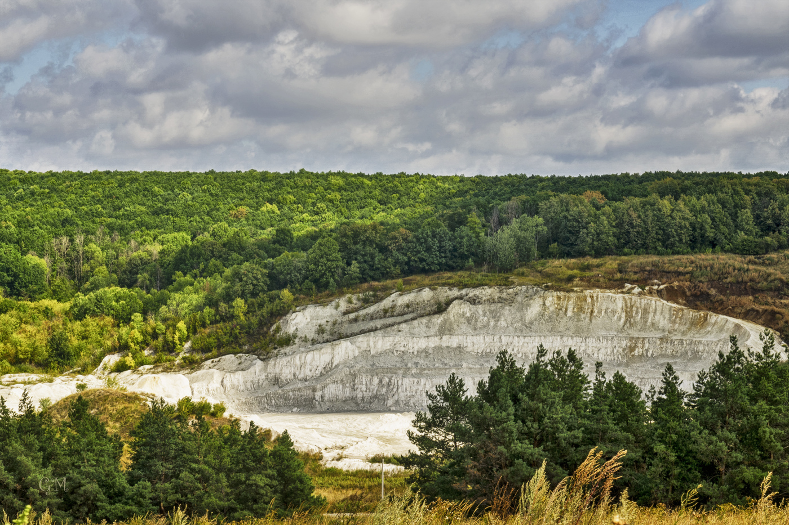
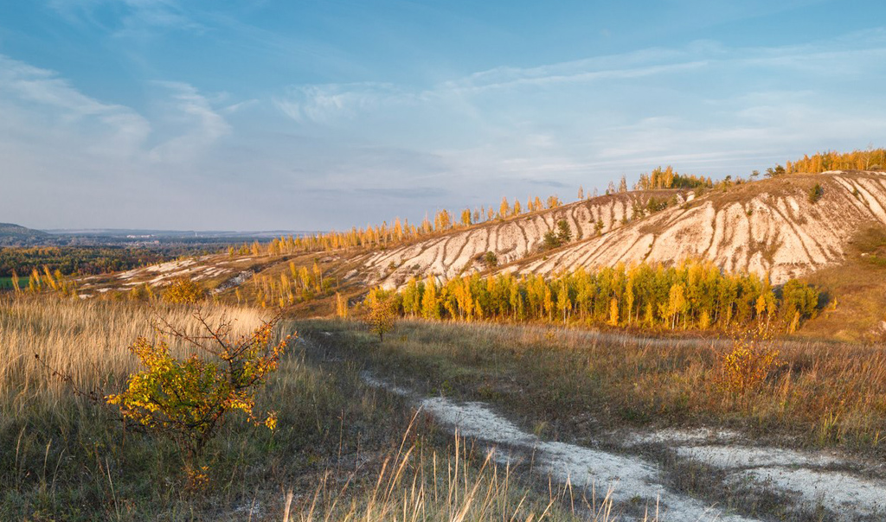
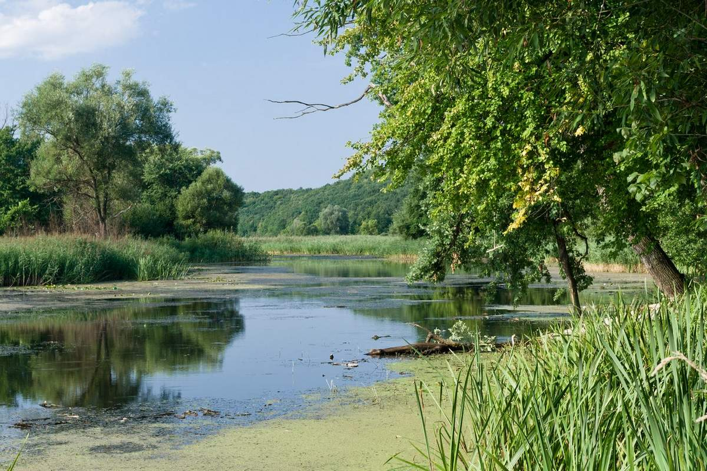

Заповедник «Белогорье»
- Режим работы: экскурсии проводятся по рабочим дням, в 10:00, 13:00 и 15:00.
- Стоимость услуг: для взрослых 80 руб., для детей 40 руб. Необходима предварительная запись.
- Местоположение: пер. Монастырский, д. 3, Борисовка, Белгородская обл.
«Белогорье» — одно из немногочисленных заповедных мест,
которые могут похвалиться богатейшей природоохранной
историей. В 17 веке эти земли были частью 800-километровых
оборонительных сооружений вдоль Ворсклы, включавших земляные валы,
остроги и крепости. Это был своеобразный рубеж, разделявший славян и половцев,
татаро-монголов и крымских татар. В сегодняшних границах «Белогорье» образовано
в 1999 г. на базе работавшего здесь с 1925 г. заповедника «Лес на Ворскле» для
сохранения и изучения традиционных и редких экосистем и ландшафтов юга
Среднерусской возвышенности.

«Белогорье» сегодня — это десятки островков из
250-300-летних дубрав, разбросанных среди
бесконечных лугов и степей. Заповедная зона
включает в себя 6 кластеров: «Лес на Ворскле»,
«Острасьевы яры», «Лысые горы», «Ямская степь»,
«Стенки-Изгорье» и природный парк «Ровеньский».
Каждый из них имеет свои особенности, наибольший
интерес вызывают сектора «Лес на Ворскле» и «Ямская степь».

«Лес-на-Ворскле» — старейший и крупнейший
кластер «Белогорья». Его площадь — около 10 кв.
км, притом лесом занято 90 %. Рельеф такой же,
как и у остальных кластеров: одна часть находится на
водоразделе, а другая — в долине реки Ворскла.
Луга изрезаны глубокими, до 100 м оврагами и балками
сложной структуры. Значительную часть «Леса-на-Ворскле»
занимают привычные для этого региона дубравы с примесью
широколиственных пород деревьев. Большинство ее участков
веками не пострадали от антропогенного воздействия,
так что у них получилось сберечь свое богатство.

«Ямская степь» — еще один популярный у ученых и туристов участок
«Белогорья» с территорией 5,66 кв. км. Это крупнейший степной кластер
заповедника и, видимо, один из богатейших во всем Черноземье: на площади
в 1 кв. км можно обнаружить до 65 видов растений.
Запись по телефону 8(4724)-65-03-15 или по электронной почте zapovednik_belogorye@mail.ru
Официальный сайт заповедника.